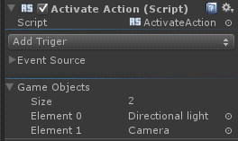
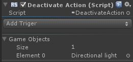

Activate/Deactivate Actions |
Top Previous Next |
|
Activate Action The Activate Action script activates a list of game objects whenever the associated trigger(s) are fired. This action is a One-shot Custom Trigger Action. The Game Objects list contains the game objects that the action will activate when triggered. Game objects can be added by simple drag and drop.
Deactivate Action  The Deactivate Action script deactivates a list of game objects whenever the associated trigger(s) are fired. This action is a One-shot Custom Trigger Action. The Game Objects list contains the game objects that the action will deactivate when triggered. Game objects can be added by simple drag and drop.
|